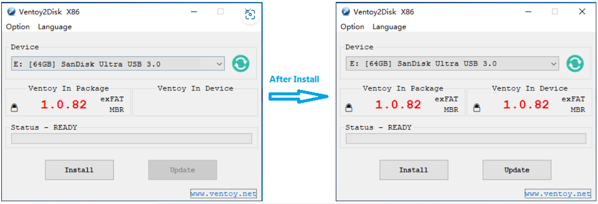
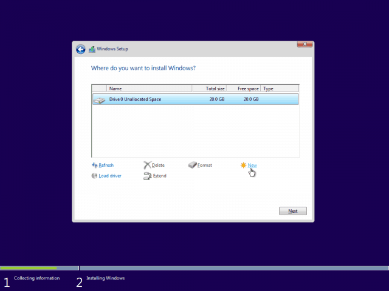
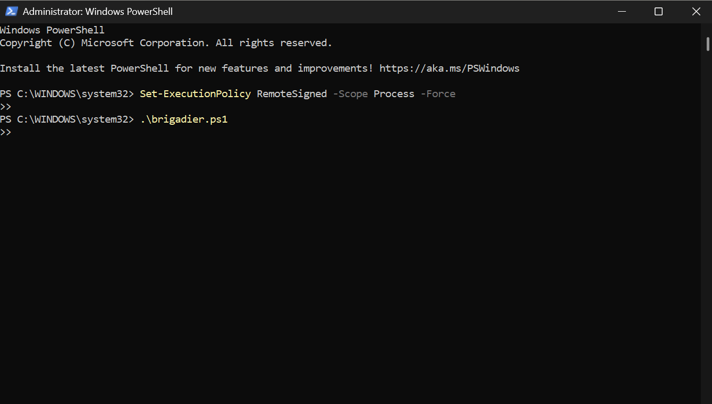

Tools Used
- Ventoy USB Boot Utility
- Windows 11 ISO (Microsoft)
- Brigadier (GitHub)
- 7-Zip
- Windows PowerShell (Administrator)
Steps Taken
- Prepared a Ventoy USB drive with GPT partition style and enabled Secure Boot support, then copied the Windows 11 ISO onto the USB. If you leave it on MBR or skip Secure Boot support, the iMac may not boot properly.
- Booted the Intel iMac from USB using the Option (⌥) key, selected the Ventoy EFI entry, and chose the Windows 11 ISO. Always pick the EFI entry because legacy boot can cause installer errors.
- Deleted all macOS partitions in the Windows installer and installed Windows 11 onto unallocated space. Leaving macOS partitions can cause setup failures or dual‑boot confusion.
- Completed Windows setup and reached the desktop.
- Downloaded Brigadier from GitHub and installed 7-Zip for extraction.
- Ran Brigadier in PowerShell with execution policy bypass to fetch Boot Camp drivers:
If the BootCamp folder is empty after running, rerun Brigadier because sometimes the first attempt doesn’t fetch drivers.Set-ExecutionPolicy Bypass -Scope Process -Force cd C:\brigadier .\brigadier.ps1 - Installed drivers by double-clicking
Setup.exefrom the Boot Camp folder. Skipping this step leaves Wi‑Fi, audio, and brightness keys non‑functional. - Rebooted and validated Wi‑Fi, Bluetooth, audio, graphics, brightness keys, and Boot Camp Control Panel.
Screenshot: Ventoy USB Preparation
Ventoy USB drive prepared with Windows 11 ISO copied.
Screenshot: Windows Installation
Windows installer showing partition deletion and installation on unallocated space.
Screenshot: Brigadier in PowerShell
Brigadier automatically detecting iMac model and downloading Boot Camp drivers.
Screenshot: Boot Camp Driver Setup

Boot Camp drivers installed via Setup.exe for full hardware support.
Outcome
The unsupported Intel iMac now runs Windows 11 smoothly with full driver support (Wi-Fi, Bluetooth, audio, graphics, keyboard/media keys). Boot Camp Control Panel is available, extending the hardware’s life for labs, virtualization, and productivity.